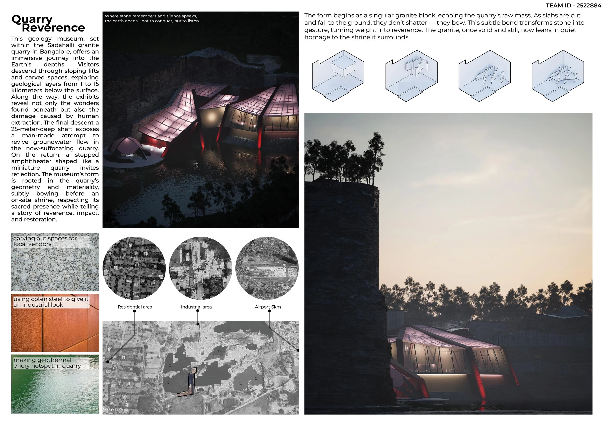
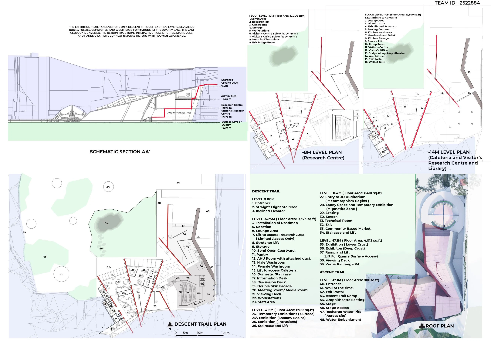
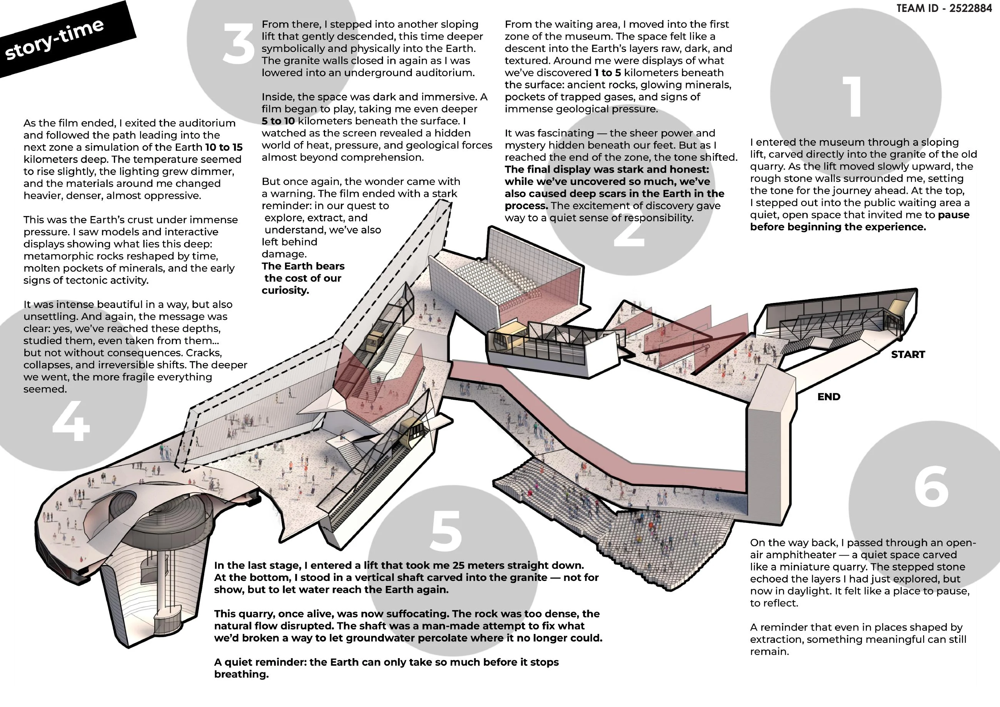
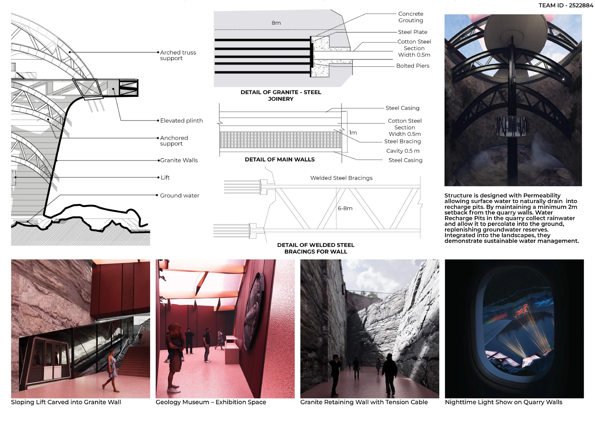

Landscape Design Proposal · Tejas Ajit Jamdar
Quarry Reverence
A small incision today, shaping a better landscape tomorrow.
Quarry Reverence is a collaborative landscape design proposal by Tejas Ajit Jamdar and Gauri Thange. Its theme is “A small incision today, shaping a better landscape tomorrow.”
The original presentation sheets below bring together the visual design narrative. The work is also represented by a three-dimensional model in the interactive portfolio, allowing the proposal to be explored through both the presentation and the model.
Project credits
Tejas Ajit Jamdar AND GAURI THANGE
Explore the interactive 3D portfolio →Save Quarry Reverence on Pinterest ↗
Project presentation



